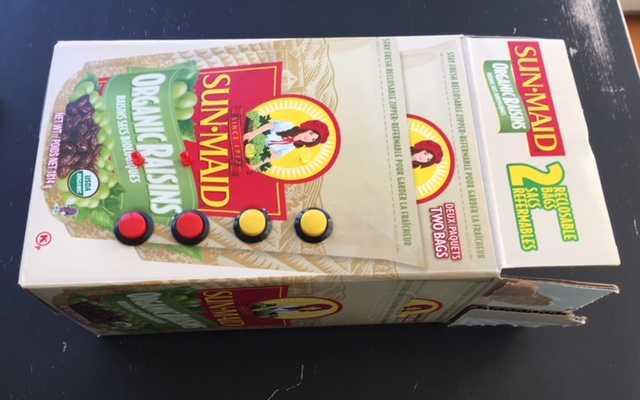
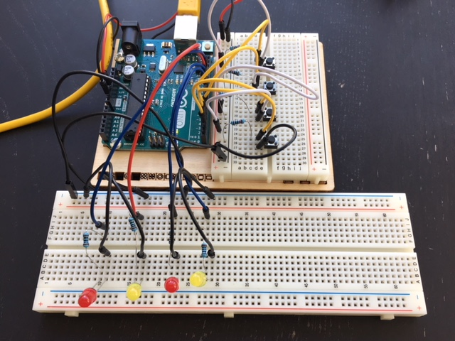
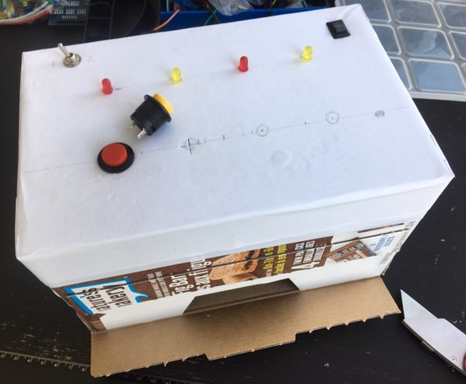
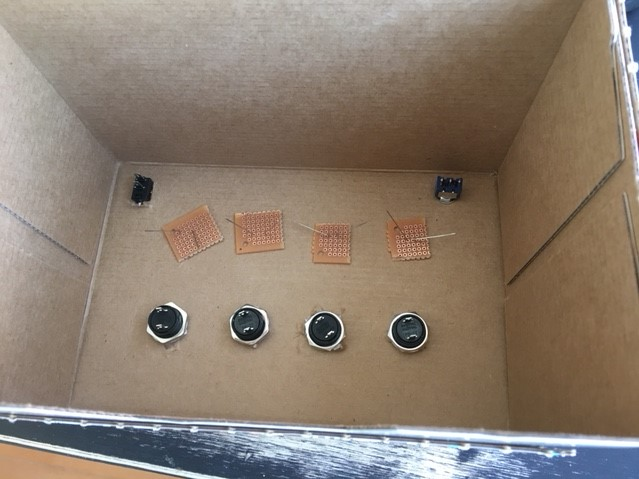
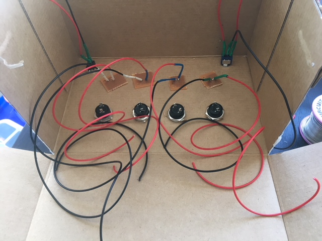
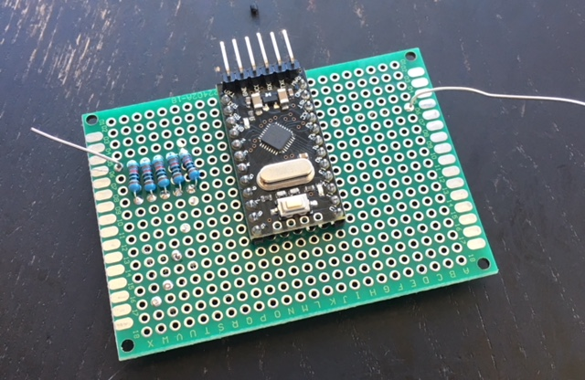
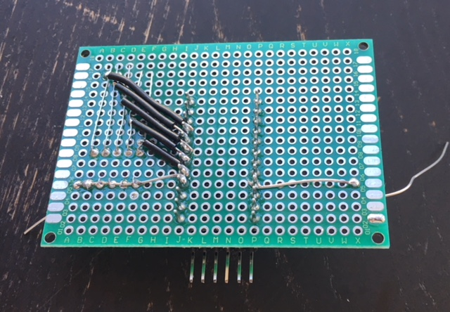
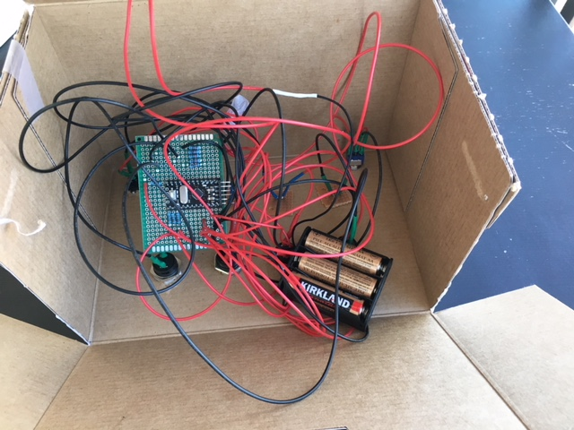
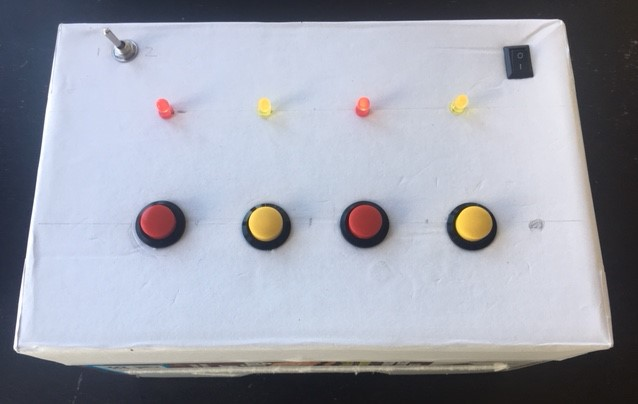

Pattern Matching Game
I made a physical pattern matching game with lights and buttons and an Arduino.
With my Fridays free from regular work I picked a project to work on. I decided to make something for my kids. I've played around with Arduino before and built a few small toys for them. They get pulled out every so often.
I have lots of bits of electronics like buttons, LEDs and sensors. Recently I was showing my kids how LEDs work and how buttons work. Together we came up with a simple pattern matching game idea. The basic idea is that the lights will show a sequence and you must press the buttons to match the sequence. If you get it right you get the next sequence. We grabbed an empty cardboard box, cut some holes in it and stuck in the buttons and LEDs.
This was the first mockup. Not pretty but gives the idea of how it might work. The kids were able to press the buttons and see what it would be like to play the game. They seemed happy so it was time to continue. 
I got out the Arduino and a breadboard and started trying to remember how it all worked. Luckily the project is really just 4 buttons and 4 LEDs. The Arduino has digital inputs that you can use to tell if a button is pressed or use it to turn on an LED.
After a few hours of playing around I had the prototype created. 
I coded a simple version of the game to just show one light at a time. Show light, press button, repeat. All the code for this project is on my github. Once I was happy this was working correctly I went on to creating the real version.
There were a few extra things that the real version would need compared to the mock up version. First off it needed an on/off switch. As well as this I decided to add a toggle switch to allow switching between two versions of the game. A simple version that would only ever show one light at the time, and an advanced version that would increase the number of lights in the sequence after every third correct answer.
I found a new cardboard box and covered it in white paper. Then I started adding all the controls. 
The LEDs needed to be held in place so I broke a perfboard into a few pieces and soldered the legs of the LEDs to that on the other side of the cardboard. This is good enough to hold them in place. 
Next I added wires to all the buttons, switches and LEDs. I left lots of wire so they can all reach the perfboard that will house the Arduino. 
Now it was time to start connecting things to the Ardunio. There are lots of different types of Arduino. For this case I was using an Ardunio Pro Mini. They are nice and small and I had one available to use. Basically I just had to wire up everthing the same as it was on the prototype. However this is the part that took me the longest. I don't solder things that often so it tooks a while to do it. And I managed to only melt one of the buttons. Luckily I had a spare lying around. Also I'm sure for anyone that actually does electronics a lot this looks awful but it does work.  
After much soldering and testing of all the connections it was done. And it worked. Behold the masterpiece. There is order to this even if it doesn't look like it. 
All that was left to do was program the more difficult version of the game and close it up. This is the finished version. 
It's fun to play around with electronics, especially when you spend all your working time just programming. It is a different challenge to debug an electronics project. And it is a lot less forgiving.
This completes my first project for my Fridays off. It was fairly simple but I wanted something I could definitely finish and something that would be fun to work on. So this accomplished both. Feel free to check out the code on my github although without the hardware it is probably not much use.